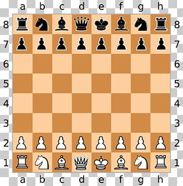

Taşların Dizilişi
Satranç tahtası 8x8 kareden oluşur. Her oyuncu, en arkada kaleler (Rook), atlar (Knight), filler (Bishop), vezir (Queen) ve şah (King) olacak şekilde taşlarını dizer. Önde ise 8 piyon (Pawn) bulunur. Beyaz'ın sağ köşesi her zaman beyaz kareyle başlar.
Taşların Hareketleri
- Piyon (Pawn): Yalnızca düz ilerler, ilk hamlede iki kare gidebilir, diğer hamlelerde bir kare. En son sıraya ulaştığında terfi (promotion) olarak vezir, kale, fil veya ata dönüşebilir.
- At (Knight): ‘L’ şeklinde (2 yatay + 1 dikey veya 2 dikey + 1 yatay) hareket eder.
- Fil (Bishop): Sadece çapraz karelerde ilerler. Kendi rengi üzerinde kalır.
- Kale (Rook): Dikey ve yatay hatlarda sınırsız ilerleyebilir.
- Vezir (Queen): Hem kale hem de fil gibi hareket edebilir; en güçlü taştır.
- Şah (King): Her yönde yalnızca 1 kare ilerleyebilir; ayrıca rok yaparak güvenliğini artırabilir.
Her hamlede taşlarını gelişime dahil etmeye, merkeze hakim olmaya ve mümkünse rakip taşları tehdit etmeye odaklanman gerekir. Bu temel prensipler satranç oyununun her aşamasında önemli rol oynar.